Oppia is an open source project that involves online education. Users can learn from "explorations," bite-sized activities to learn specific topics. They can also create their own explorations. I got involved through an open source event at UC Berkeley in November 2014. I worked on the design of the gallery webpage which showed up very jumbled on a phone. I worked on this project for about a month in January 2015 before school started back up. For reference, the gallery looked something like this:
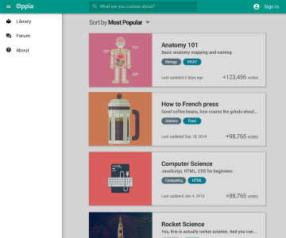
In my first design, I tried to stay true to the desktop site. The landing page is essentially just the top part of the desktop site. The "log in" button on the top right side becomes "dashboard" when a user logs in. A hamburger icon, when tapped, would display a vertical menu. I thought of a vertical menu in case the user wanted to see the webpage still.
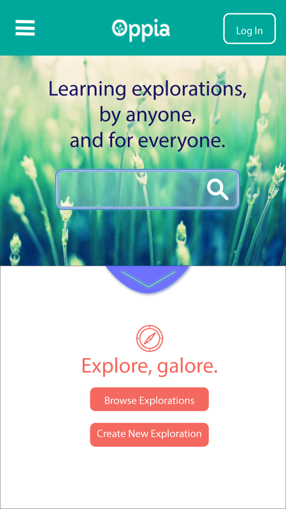 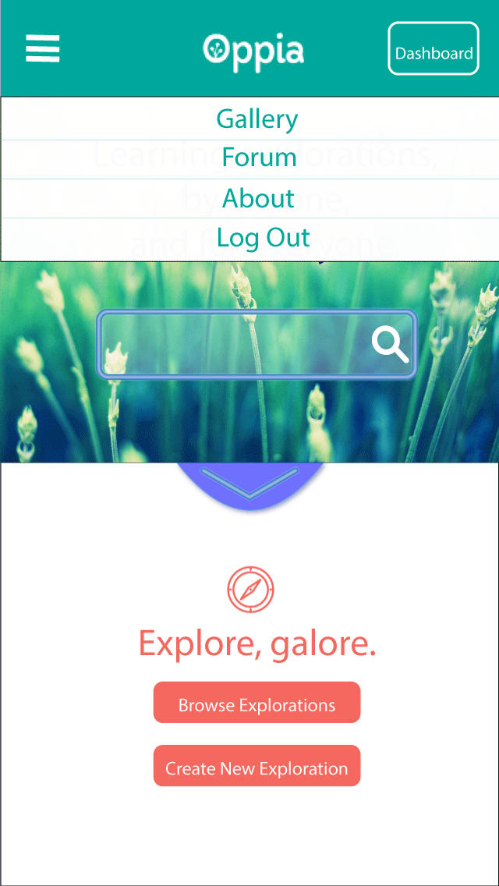The gallery is essentially the same as the desktop site version. Sorting options are hidden under "Options." This moves to a new page where all the options are listed. When tapped, the option gets selected and the text turns turquoise.
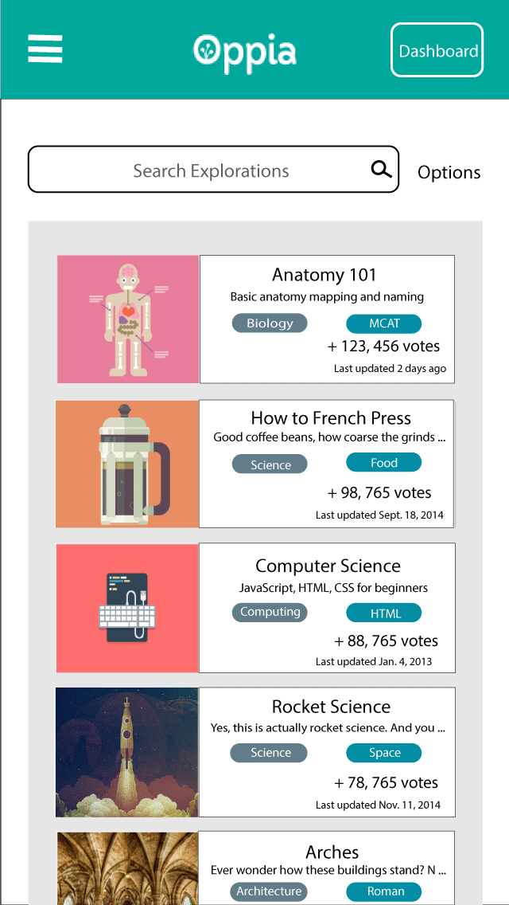 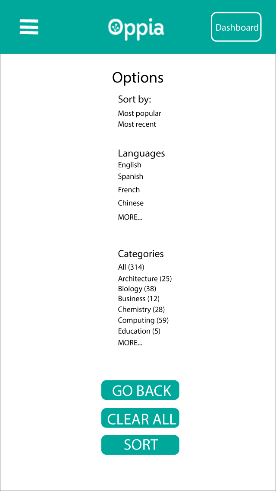 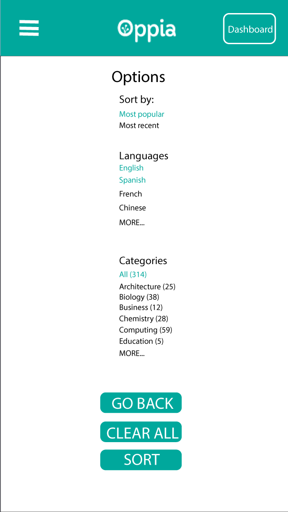At this point I had my first design review (ever). I had done a lot of reading about design, but had never actually jumped into it. However, the project's leads were friendly and very helpful. For the landing page, the confusion was with the blue part in the middle, but I explained that that was to scroll to the next part. However, that should be lower on the page, if the gallery were to be still on the same page. The vertical drop-down menu was okay, but there was not much in content on the landing page anyways, so a menu that slides in from the side and fills the screen might be a better option. It would make the tap-able areas bigger, a plus on a phone screen. In terms of the options page, the plain text would not be seen as selectable. It just looked like plain text. With these comments in mind, I took some time and worked on another iteration.
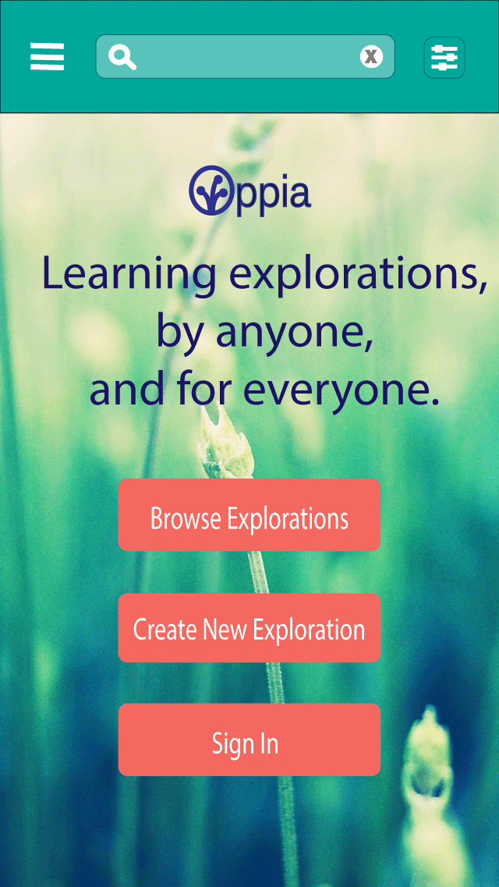 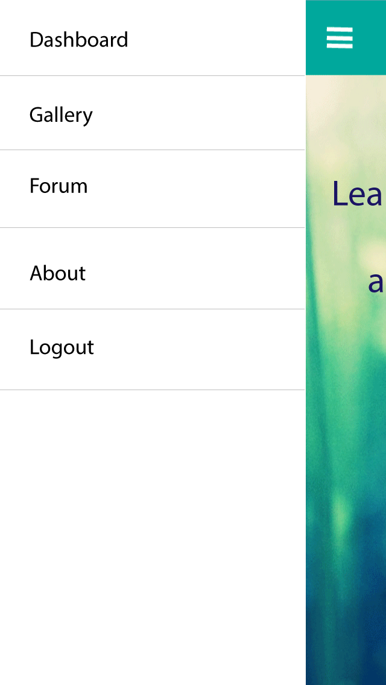 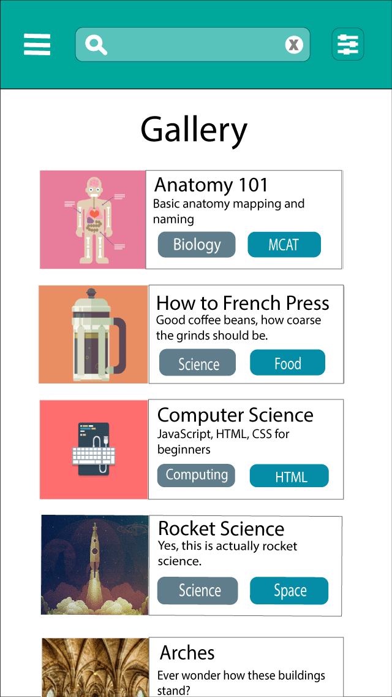I modified the landing page. I felt that too many options had been hidden. The gallery was the only place a user could search from. However, in terms of learning, if it's on the go, a user would most likely want to quickly search for something and have the results right there. I moved the search instead to the top. However, this meant that the Oppia logo was no longer there -- which would weaken their personal branding. However, my reasoning was that since this was the mobile site and not a separate app, perhaps that was not as important. I updated the navigation menu to the slide-in-from-the-side style, as discussed.
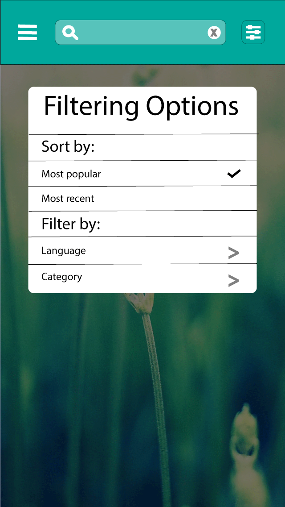 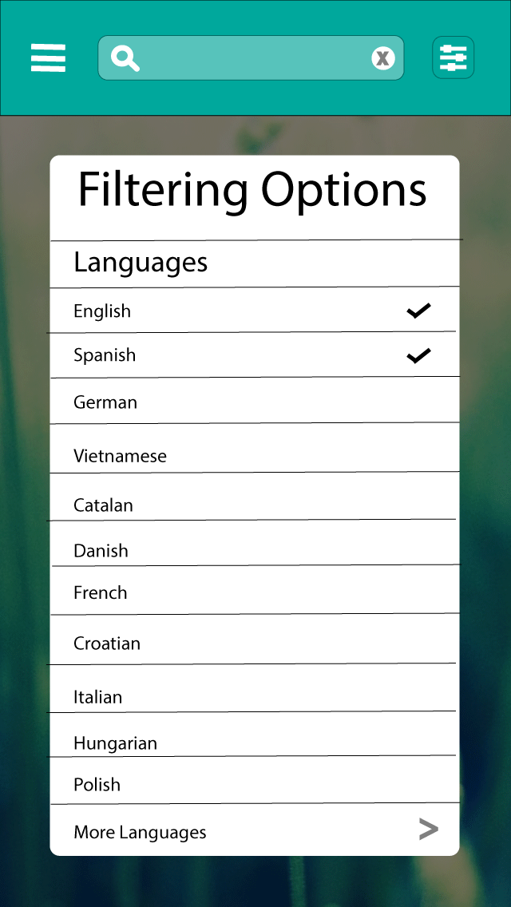 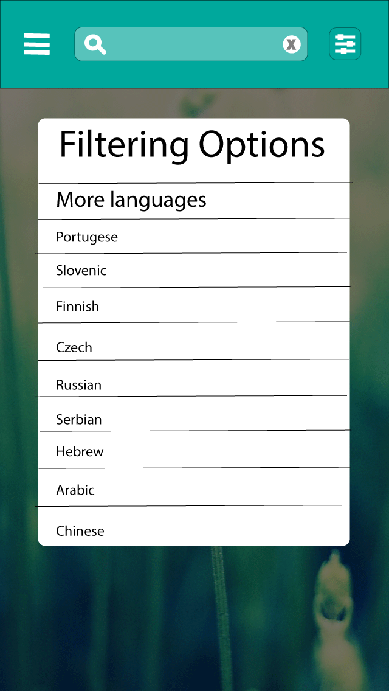For the options page, I worked on making the tap-able parts bigger and more obviously selectable. This time, it would pop up no matter which part of the site the user was on, and darken the background so the user could focus on selecting options. With category and language lists included, the menu became too long, so I decided that category and language would need to go to their own menus.
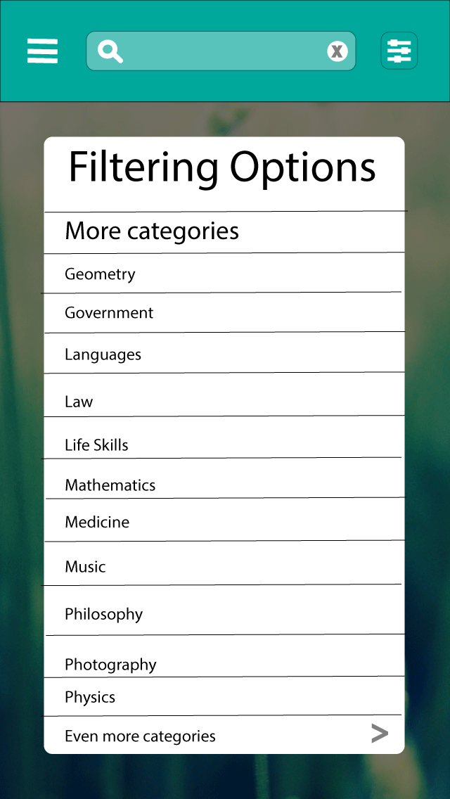 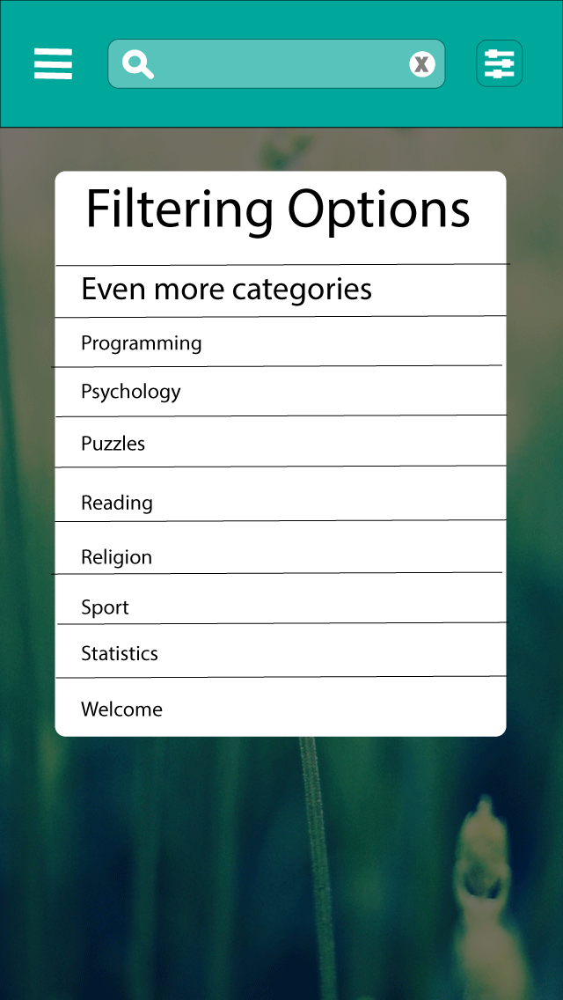
While the number of languages offered wasn't large, the number of categories required more than a second page. And since Oppia was still relatively young, this number of categories would likely increase. With these mockups, I then had another design review. A lot of parts that I had thought about (e.g. the personal branding part and the third page for categories) were brought up. For the third page of categories, one of the project leads pointed out the large amount of white space. This was an interesting problem. However, once school started, I was unable to work on this project further. I learned a lot through contributing to Oppia and I hope to work on designing products in the future.